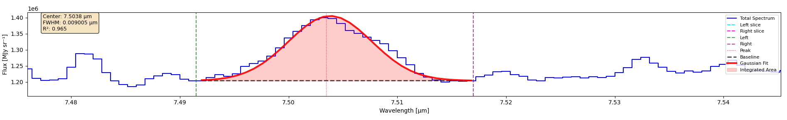

1D Spectrum Fitting
Fit a single Gaussian profile to one spectral line in the currently displayed 1D spectrum.
This is the fast, interactive fit: you pick a wavelength window by hand, get one set of parameters back, and use it to understand your data before committing to a full-cube run. For fitting every spatial pixel at once, see Pixel-by-Pixel Cube Fitting.
Selecting the Fit Region
Click Gaussian Fit on the middle toolbar to reveal the fitting controls. You then mark three wavelengths on the spectrum:
Left (λ_left): the shorter-wavelength edge of the fit window
Peak (λ_peak): the approximate line center, used as the initial guess for the fit
Right (λ_right): the longer-wavelength edge of the fit window
These are toggle buttons, not a wizard. Each of Left, Peak and Right stays pressed until you click it again. The workflow is:
Click the button for the point you want to set — it stays depressed
Click on the spectrum at that wavelength
Click the button again to release it
You may set the three points in any order, and you may re-set any single point without starting over: toggle that one button back on and click a new location. Only the most recent click for each button is kept.
The window between λ_left and λ_right is the only data the fit sees. λ_peak does not constrain the result — it only seeds the optimizer, and the fitted center is bounded by the window edges, not by your click.
Note
A rough click is genuinely fine. Anywhere inside the window converges to the same answer — the fitted center, width and area are identical whether you click on the peak or several samples off it.
The three points must be in order — λ_left < λ_peak < λ_right. Both rules are
enforced, and a violation stops the fit rather than producing a result you did not ask
for:
Selection |
What happens |
|---|---|
Left at a longer wavelength than Right |
Error: Left boundary must be less than the right boundary. Re-select the boundaries in order. |
Peak outside the Left–Right window |
Error: Peak lies outside the fit window. Move the Peak marker inside the Left/Right boundaries. |
Re-toggle the offending button and click again; the other two points are kept.
Running the Fit
Click Fit Gaussian. A Gaussian curve overlay appears on the spectrum, and a results window opens.
The fit is performed on baseline-subtracted data: a straight line is drawn between the flux values at the two window edges and subtracted before the Gaussian is fitted, so a sloping continuum does not bias the width or area.


A completed fit, zoomed to the selected window. The green and purple dashed lines are the Left and Right boundaries; the red dotted line is the Peak click. The black dashed line is the linear Baseline connecting the flux at the two edges, and the shaded region between it and the red Gaussian Fit is the Integrated Area — the quantity reported as Gaussian Area in erg/s/cm².
This is the same fit the code sample further down produces: Left 7.491492, Peak
7.503455, Right 7.516985.
Note that the area is measured above the baseline, not above zero. The continuum under the line is not counted, which is why a sloping continuum does not inflate the result.
Reading the Results
The results window is organized into the same blocks the application prints:
USER INPUT
Echoes back the wavelengths you actually clicked — Left boundary, Peak and Right boundary — so you can check the fit against what you asked for, plus the Noise region and whether it was required (see The Noise Region).
FITTED PARAMETERS
Center (μ): fitted line center, in the spectral axis unit (µm, Å, etc.)
Amplitude (A): peak height of the Gaussian above the baseline, in the cube’s flux unit (
BUNIT)Sigma (σ): Gaussian standard deviation, in the spectral axis unit
FWHM: full width at half maximum,
2.355 × σ, in the spectral axis unit
INTEGRATED QUANTITIES
Gaussian Area: the integrated line flux, computed analytically as
A × σ × √(2π).Units. For all three supported instruments the area is reported in erg/s/cm²:
Instrument
Cube unit (
BUNIT)Reported area unit
MIRI
MJy/srerg/s/cm²NIRSpec
MJy/srerg/s/cm²MUSE
10**(-20)*erg/s/cm**2/Angstromerg/s/cm²MJy/sris a surface brightness, so converting it to a flux requires multiplying by the solid angle of one spatial pixel (read fromCDELT1andCDELT2in the header) and applying thec/λ²conversion from per-frequency to per-wavelength. The result is therefore the flux from a single spaxel, not the total flux of the source. To get a source total, sum the area over the spaxels you care about.MUSE needs no such correction: its
BUNITis already a flux density per unit wavelength, soA × σ × √(2π)lands directly in erg/s/cm² once the1e-20scale factor is applied.If the header is missing or the units are not recognized, the area is reported in the cube’s own flux×wavelength units instead, and the displayed unit label says so. The label always states what the number actually is — do not assume erg/s/cm².
Equivalent Width: the width of a rectangle that has the same integrated flux as the fitted line and whose height is the continuum level. It is computed as the area in the cube’s native units divided by the mean fitted baseline across the window, so it comes out in the spectral axis unit (µm, Å, etc.), not in flux units.
BASELINE
The straight line subtracted before fitting:
Slope: continuum gradient across the fit window, in flux per spectral unit
Left endpoint: the flux value of the fitted baseline at λ_left, in the cube’s flux unit. This is a continuum level, not a wavelength.
FIT QUALITY
R² (coefficient): coefficient of determination, 0 to 1, higher is better.
Warning
R² is sensitive to how wide a window you picked. Extending the boundaries out over flat continuum lowers R² even when the fit to the line itself is unchanged, because the extra points add scatter without adding signal. Compare R² only between fits using comparable windows, and judge the overlay by eye as well.
As a rough guide: above 0.95 is a clean fit, 0.8–0.95 is usable, and below about 0.5 the application flags the result as poor fit quality in the status message.
Data points: number of wavelength samples inside the window that entered the fit.
A Gaussian has three free parameters, so this must be at least 4 for the fit to be meaningful, and you want considerably more. Check the sampling against the width: fewer than roughly 3 points per FWHM means the line is undersampled and the fitted σ, FWHM and area should not be trusted.
STATUS
A message summarizing the outcome — success with the R² value, a poor-fit-quality warning, or the reason the fit failed.
The Noise Region
Noise L and Noise R are toggle buttons like the others, and mark a line-free stretch of spectrum used to estimate the noise level.
For a normal 1D fit you can ignore them. They become mandatory in one specific case:
Important
If fewer than 15 wavelength samples fall between λ_left and λ_right, the fit will not run until you set both Noise L and Noise R. You will get:
Narrow range (N points, under 15). Define a noise region first, or widen the fit window.
The reason is sampling, not arithmetic. A Gaussian has three free parameters, so a window of a dozen points is close to underdetermined, and the application refuses to hand back parameters from it without you having at least looked at the surrounding noise.
The noise region does not change any fitted value. Once the fit runs, the noise estimate is not used in the optimization, the area, or R² — it only unlocks the narrow case. If you hit the warning, widening the window is usually the better fix, since a line sampled by fewer than 15 points is marginal regardless of what the noise level turns out to be.
The results window states which case applied, so an unset noise region never looks like something you forgot:
Noise region: not set (not required at 25 points)
Noise region: 7.100000 µm - 7.150000 µm (required at 12 points)
Noise L / Noise R carry their full weight in Pixel-by-Pixel Cube Fitting, where they are always mandatory and set the detection threshold that separates detections from upper limits.
Constraints
λ_left < λ_peak < λ_right, enforced — see the ordering rules aboveThe window needs at least 4 samples, since a Gaussian has three free parameters. Below that the fit fails with “Not enough points in selected region (need at least 4)”. Through the API, an empty or all-NaN window raises
ValueErrorKeep the window tight around the line. A window many times wider than the FWHM depresses R² and lets baseline structure far from the line influence the linear baseline subtraction
Windows narrower than 15 samples require a noise region — see The Noise Region above
The fitted center is bounded to
[λ_left, λ_right]. A line whose true center lies outside your window cannot be recovered — you have to move the boundaries
Using the API
The same fit is available without the GUI.
Fitting one line
from cube_explorer.api import load_cube, fit_line
cube = load_cube("data.fits")
result = fit_line(
wavelength=cube.wavelength,
spectrum=cube.spectrum,
x1=7.491492, # Left boundary
x2=7.516985, # Right boundary
peak_x=7.503455, # Centre guess - the GUI's "Peak" click
header=cube.header, # Required for the erg/s/cm² conversion
wave_unit=cube.wave_unit,
)
if result.success:
print(f"Center: {result.center:.6f} {cube.wave_unit}")
print(f"Amplitude: {result.amplitude:.4e}")
print(f"FWHM: {result.fwhm:.6g} {cube.wave_unit}")
print(f"Area: {result.area:.4e} {result.area_unit}")
print(f"R²: {result.r_squared:.4f}")
else:
print(f"Fit failed: {result.message}")
Important
Pass header=cube.header if you want area in erg/s/cm². Without it the fitter
has no pixel scale to work with and leaves the area in the cube’s native
flux×wavelength units. Always read result.area_unit rather than assuming.
peak_x is optional — it defaults to the brightest sample inside the window, which
is the programmatic equivalent of clicking on the peak.
To fit more than one line, call fit_line again for each region. There is no batch
function — the lines are independent fits, not one simultaneous model.
Result fields
result = fit_line(cube.wavelength, cube.spectrum, 7.491492, 7.516985,
peak_x=7.503455,
header=cube.header, wave_unit=cube.wave_unit)
# Fitted parameters
result.center # Line center, spectral axis unit
result.amplitude # Peak height above baseline, cube flux unit
result.sigma # Gaussian sigma, spectral axis unit
result.fwhm # 2.355 * sigma
# Integrated flux
result.area # Converted area (erg/s/cm² when possible)
result.area_unit # String naming the unit of `area` - always check this
result.area_native # Area before conversion, in cube flux x wavelength units
# Baseline
result.baseline # Fitted linear baseline evaluated at each data point
result.baseline_slope # Continuum gradient
result.baseline_intercept # Baseline flux at x1 (the "Left endpoint" in the GUI)
# Quality and status
result.r_squared # Coefficient of determination
result.success # Did the fit converge?
result.message # Human-readable status
Note
Use area_native, not area, whenever you divide by something measured in the
cube’s own units — an equivalent width, for example. Dividing a converted erg/s/cm²
area by a continuum in MJy/sr mixes unit systems and gives a meaningless number.
Next Steps
Pixel-by-Pixel Cube Fitting — repeat this fit across every spatial pixel
Continuum Subtraction — remove the continuum before fitting
Exporting Data — save spectra and fit results